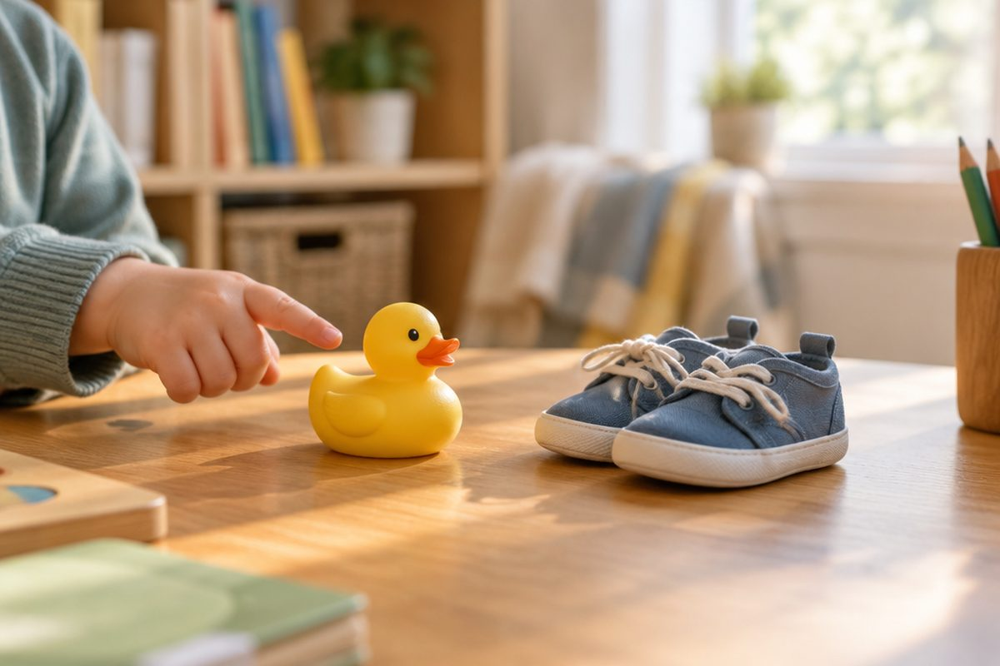

전체 단원 › 1학년 1학기 › 국어 › 1단계 · 자음 ㄱ ㄴ ㄷ ㄹ
ㄱ ㄴ ㄷ ㄹ, 이름이 뭘까?

"오리"를 읽어 봐요. '리'에는 모음 말고 다른 글자가 있어요. 오늘은 모음과 짝을 이루는 자음 네 개를 만나요.
자음은 모음의 짝꿍
자음은 모음과 만나 글자가 돼요.
ㅇ 자리에 자음을 넣어 보세요.
자음마다 이름이 있어요.
ㅇ+ㅏ=아 → ㄱ+ㅏ=가
ㄱ 기역, ㄴ 니은
ㄱ의 이름은 '기역'이에요.
ㄴ의 이름은 '니은'이에요.
ㄱ은 아래로 꺾이고, ㄴ은 위에서 내려와 옆으로 가요.
ㄱ+ㅏ=가 · ㄴ+ㅏ=나
ㄷ 디귿, ㄹ 리을
ㄷ의 이름은 '디귿'이에요.
ㄴ 위에 줄을 하나 그으면 ㄷ이에요. 쓸 때는 위의 가로줄을 먼저 긋고, 그다음 ㄴ을 써요.
ㄹ의 이름은 '리을'이에요. 꼬불꼬불해요.
ㄷ+ㅏ=다 · ㄹ+ㅏ=라
낱말을 읽어요
배운 자음과 모음으로 낱말을 읽어요.
글자를 하나씩 천천히 읽어 봐요.
오리 · 다리 · 고기 · 구두 · 라디오
핵심 낱말
- 자음
- 모음과 만나야 소리가 나는 글자예요.
- 기역 · 니은
- ㄱ과 ㄴ의 이름이에요.
- 디귿 · 리을
- ㄷ과 ㄹ의 이름이에요.
- 글자 만들기
- 자음 + 모음 = 글자 (ㄱ+ㅏ=가).
꼭 알아야 할 표현
| 기역 | 자음 ㄱ의 이름 | |
| 니은 | 자음 ㄴ의 이름 | |
| 디귿 | 자음 ㄷ의 이름 | [디귿] |
| 리을 | 자음 ㄹ의 이름 | |
| 가 나 다 라 | ㄱ ㄴ ㄷ ㄹ에 ㅏ를 붙인 글자 | |
| 고기 | 🍖 먹는 고기 | |
| 오리 | 🦆 꽥꽥 우는 새 | |
| 다리 | 🦵 몸의 다리, 또는 강을 건너는 다리 | |
| 구두 | 👞 가죽으로 만든 신 | |
| 라디오 | 📻 소리를 듣는 기계 |
한 줄 정리
- 자음은 모음과 만나 글자가 돼요.
- ㄱ 기역, ㄴ 니은, ㄷ 디귿, ㄹ 리을.
- 가 나 다 라처럼 자음 + 모음으로 글자를 만들어요.
학교 교육과정 연결
- [2국04-01] 한글 자모의 이름과 소릿값을 알고 정확하게 발음하고 쓴다.